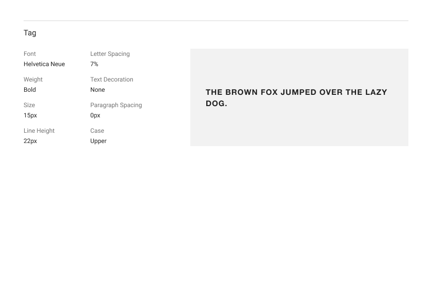

Guide to the best-practices for building and deploying web applications.
introduction
Een korte omschrijving van wat Code Cookbook inhoudt, wat het doet, waarvoor het ingezet kan worden en hoe het praktisch te gebruiken valt.
Code Cookbook
Wat is Code Cookbook
Deze website is te gebruiken als naslagwerk voor zowel nieuwe als lopende projecten.
Een deel van dit naslagwerk bestaat uit algemene richtlijnen en gemaakte afspraken die over meerdere projecten gelden. Deze zullen in een volgende versie als aparte gemarkeerd worden en de weergave hiervan getoggled.
Verder is een deel van dit naslagwerk project-specifiek: informatie benodigd voor bijvoorbeeld de handoff van design naar development, projectdocumentatie, benodigde bestanden.
Wie gebruikt dit
Dit naslagwerk is ontwikkeld voor designers en developers bij Active Collective.
Ook (juist!) voor nieuwe medewerkers of stagiairs is dit naslagwerk fijn om een wat beter beeld te krijgen van hoe alles werkt.
Er zijn, door middel van desk research en benchmark-onderzoek bij andere agencies, industriestandaarden meegenomen en dit project is daarom ook geschikt voor gebruik door anderen.
Deze website kan overigens ook gebruikt worden door projectleiders voor het bekijken van de status van een project.
Waar te gebruiken
Dit naslagwerk kan binnen een Digital Agency met in-house design en development, gebruikt worden voor het vastleggen van:
•Algemene richtlijnen en afspraken
•Project-specifieke informatie (documentatie)
•Projectbestanden
•Herbruikbare design- of codedelen
•Inspiratie/handige bronnen
Wanneer te gebruiken
Met aanleveren van informatie en bestanden voor de handoff, wordt dit 'handboek' erbij gepakt om te lopen of alles compleet is, en vervolgens ingevoerd in Code Cookbook
Bij het developen kan dit naslagwerk op een tweede scherm openstaan aan de hand waarvan de setup van een (nieuw) project kan worden gedaan volgens standaarden.
Dit kan zelfs door een van de 'templateprojecten' die vanuit Code Cookbook worden aangeboden, te gebruiken als basis.
Tegen de tijd van het opleveren kan met de checklists worden nagegaan of alles voldoet aan de opgestelde kwaliteitsstandarden/eisen.
Hoe te gebruiken
Navigatie
Dit naslagwerk is een single page application; dit houdt in dat alle content zich op de url 'codecookbook.nl' bevindt.
De navigatie gebeurt door middel van de sidebar aan de linkerkant; wanneer je op een van de linkjes klikt, opent de desbetreffende pagina.
Op een mobile device is dit te togglen door middel van het hamburger-icoontje rechtsbovenin.
Praktisch
Als designer kun je dit cookbook gebruiken als handleiding/checklist voor het aanleveren van de juiste projectinformatie, bestanden en designs.
Als developer kun je dit cookbook op een tabblad geopend hebben staan als een guideline en naslagwerk.
Waarom?
Behoefte aan structuur
Uit ervaring en onderzoek bleek dat er bij dit bedrijf behoefte was aan een meer gestructureerde workflow, onderling afgesproken standaarden (zoals wat er aangeleverd moet worden met de handoff), en een centrale plek waar dit in vastgelegd wordt.
Momenteel is projectinformatie namelijk nog verspreid over laptops, GitHub, Google Drive en zelfs alleen 'in het hoofd'.
Daarnaast komen er redelijk vaak bugs voor in de code; door te gaan werken volgens codestandaarden en versiebeheer goed bij te houden, zal dit al sterk verminderen.
Dez structuur in de workflow en afgesproken standaarden verhogen niet alleen de mate van transparantie in samenwerking en efficiëntie, maar ook de codekwaliteit.
Meer informatie over de totstandkoming van Code Cookbook en hoe het bedrijf is overtuigd tot het gebruik ervan, is te vinden op de About-page.
Informatie over de werkwijze bij Active Collective. Hier kun je snel een idee mee krijgen van hoe de teams te werk gaan.
Werkwijze
Er wordt algemeen gezien wel volgens een standaardflow gewerkt bij AC. Hieronder staan de verschillende onderdelen visueel uitgelegd.
Good to know: deze pagina is voor de huidige werknemers van Active Collective niet zo interessant. Voor nieuwe werknemers of stagiairs is het daarentegen een met de introductie snel erbij te pakken, (leerzaam) kijkje in het bedrijf..
workflow overview
Het huidige ontwerpproces bij AC gevisualiseerd van begin tot eind.
advies voor workflow met onderdelen
Met Code Cookbook komt ook het advies voor het verduidelijken en aanvullen van de workflow in meer detail. Samengevat komt dit op het volgende neer:
tools overview
Onderstaand een aantal tools die momenteel door developers/designers gebruikt worden. Het is geen vereiste deze te gebruiken, maar ze zijn wel nuttig!
Organisatiestructuur
Verder is het nuttig om te weten hoe de organisatiestructuur in elkaar steekt.
Handoff design naar development
De handoff van design naar development bevat een aantal 'standaardonderdelen'; deze zijn in Code Cookbook verwerkt zodat er consistent de juiste dingen worden aangeleverd. Wat de handoff inhoudt is gevisualiseerd tot het volgende:
tijdlijn
per type
Hier is ook aangegeven wat vaak nog wat extra controle/aandacht bedraagt.
Development-flow
Het development-proces verloopt voor een deel ook volgens een vaste flow. Hierbij gaat het vooral om ingebouwde controles met betrekking tot bijv. security.
Ingebouwde controles
Er zijn een aantal 'controleposten' in het proces die vrijwel automatisch gaan omdat ze 'ingebouwd' in de code zitten.
project
Projectspecifieke informatie. Wanneer er een nieuw project wordt gemaakt, wordt deze pagina gevuld met de relevante informatie om snel een indruk te krijgen van wat het inhoudt.
project-info
Informatie over dit project waarmee je je snel in kan lezen op de inhoud ervan.
De pagina is nu nog gevuld met placeholder-data over het project Active Collective portfolio, maar behoort met het inzetten van Code Cookbook, vervangen te worden met informatie over het project waarin het ingezet wordt.
concept
Het concept van de website van Active Collective is om hun portfolio te laten zien. Deze website is een portfoliowebsite waarop een een aantal klant-cases worden gepresenteerd.
Ook staan er een aantal blogposts op om de huidige bezigheden up-to-date te kunnen laten zien.
screenshots
mobile
mobile homepagemobile hamburger menumobile contact page
desktop
desktop home pagedesktop about pagedesktop contact pagedesktop services page
Betrokkenen
Degenen die aan dit project werken zijn:
(placeholder-informatie voor nu)
Designers
[naam]
[naam]
Developers
[naam]
[naam]
progress
Op deze pagina wordt de huidge stand/status van het project weergegeven. Onderstaande data is gelinkt aan de GitHub-repository en wordt dan ook live-geüpdatet.
current status
milestones
Binnen een GitHub-repository kan projectvoortgang worden bijgehouden. Je kun hierbij, naast het invoeren van taken, ook 'milestones' toevoegen. Dit zijn de 'hoofddoelen' die gesteld worden voor de planning van een project.
In Code Cookbook zijn deze by default direct gelinkt aan de repository 'codecookbok', maar worden bij gebruik voor een project aangepast naar de desbetreffende repo:
to-do
To-do's are presented as repository issues and directly pulled from the project's GitHub repo. Developers can change the project link in 'pages'.
now
Dit zijn de issues die nu openstaan op de repository codecookbook.
done
Aangezien er nog geen lijst met afgesloten issues is op de repository van codecookbook, zijn ter illustratie de issues van een andere repository hieronder getoond.
ontwerp
Dit is het ontwerp van het project. Hierin zijn ook de basis-elementen van de pagina's die in het project gebruikt worden, vastgelegd en links naar (delen van het) design verzameld.
Design
Figma-link geheel project
Mobile design
Er is uiteraard mobile-first gewerkt; hier een impressie van het design. Het volledige design is te bekijken via de Figma-link hierboven.
Desktop design
Desktop design voor dit sproject. Het volledige design is te bekijken via de Figma-link hierboven.
Componenten
Overzicht
States
Fonts
Figma-embed
License information
This font is protected and not to be used by others as it's simply used for a graduation project here.
Neue Helvetica® W05 45 Light
Neue Helvetica® W05 55 Roman
Neue Helvetica® W05 65 Medium
Neue Helvetica® W05 75 Bold
Preview
Headings
Headings
Body

Afbeeldingen
Rectangles
Binnen dit project maken we gebruik van twee verschillende shapes: vierkanten en rechthoeken.
We maken gebruik van de rechthoeken voor content-afbeeldingen. Deze zijn meestal 1100x300px.
Squares
We maken gebruik van de vierkanten voor card-afbeeldingen. Deze zijn meestal 547x610px.
Headers
Verder passen we eenzelfde formaat toe voor de pagina-header background.
Iconen
Er wordt een standaardset iconen gebruikt, afkomstig van Code Design System. Deze zijn te vinden in het templatebestand in Figma onder het kopje atoms > icons.
The free version is only for personal use. However if you want to use it for commercial purposes, you need to buy the license from its foundry where it originated.
Helvetica Neue is a reworking of the typeface with a more structurally unified set of heights and widths. Other changes include improved legibility, heavier punctuation marks, and increased spacing in the numbers.
Neue Helvetica uses a numerical design classification scheme, like Univers. The font family is made up of 51 fonts including nine weights in three widths (8 in normal width, 9 in condensed, and 8 in extended width variants) as well as an outline font based on Helvetica 75 Bold Outline (no Textbook or rounded fonts are available).
The original numbering system for the weight designations came from the numbering of the Univers font. The basic font weight, “Helvetica roman”, is at the heart of this numbering system.
Dit zijn alle variabelen die nodig zijn voor het ontwerp van dit project. Als ontwerper kun je zo variabelen toevoegen of verwijderen, en als developer hoef je deze waarden alleen nog maar te copy-pasten naar een SCSS-file.
colors
primary
#202020ff
black
#ffffffff
white
#67c8f2ff
brand
secondary
#313131ff
gray-1
#878a8dff
gray-2
#f6f6f6ff
gray-3
highlight
#C4C4C4
body-gray
#67C8F2
body-highlight
#69c9f21a
brand-transparent
variable
value
$black:
#202020ff;
$body-gray:
#C4C4C4;
$body-highlight:
#67C8F2;
$brand:
#67c8f2ff;
$brand-transparent:
#69c9f21a;
$gray-1:
#313131ff;
$gray-2:
#878a8dff;
$gray-3:
#f6f6f6ff;
$white:
#ffffffff;
typography
font-size
54px
34px
28px
22px
18px
16px
variable
value
$heading-1:
53px;
$heading-2:
34px;
$heading-3:
28px;
$heading-4:
22px;
$heading-5:
18px;
$p:
16px;
font-weight
700
600
500
400
300
variable
value
$weight-bold:
700;
$weight-semibold:
600;
$weight-medium:
500;
$weight-normal:
400;
$weight-light:
300;
distances
spacing
variable
value
$mobile-xxxs:
4px;
$mobile-xxs:
8px;
$mobile-xs:
11px;
$mobile-s:
16px;
$mobile-default:
20px;
$mobile-m:
24px;
$mobile-l:
28px;
$mobile-xl:
34px;
$mobile-xxl:
40px;
$mobile-xxxl:
55px;
$mobile-hughmongus:
64px;
$mobile-innerpage:
80px;
$mobile-page:
84px;
variable
value
$desktop-xxxs:
8px;
$desktop-xxs:
16px;
$desktop-xs:
20px;
$desktop-s:
24px;
$desktop-default:
32px;
$desktop-m:
40px;
$desktop-l:
56px;
$desktop-xl:
64px;
$desktop-xxl:
70px;
$desktop-xxxl:
84px;
$desktop-hughmongus:
100px;
$desktop-innerpage:
110px;
$desktop-page:
128px;
layout
variable
value
$width-xxxs:
15px;
$width-xxs:
25px;
$width-xs:
50px;
$width-s:
100px;
$width-default:
264px;
$width-m:
345px;
$width-l:
527px;
$width-xl:
739px;
$width-xxl:
878px;
$width-xxxl:
0px;
$width-hughmongus:
0px;
$width-innerpage:
1075px;
$width-page:
1440px;
variable
value
$height-xxxs:
25px;
$height-xxs:
50px;
$height-xs:
100px;
$height-s:
161px;
$height-default:
200px;
$height-m:
336px;
$height-l:
450px;
$height-xl:
610px;
$height-xxl:
620px;
$height-xxxl:
0px;
$height-hughmongus:
0px;
$height-innerpage:
0px;
$height-page:
0px;
context
Overige context. Op deze pagina nog een aantal dingen die nodig zijn om te weten, zoals: wat de doelgroep is van dit product, wat de visie is in dit project en wat de testscenarios zijn.
visie
Momenteel is deze pagina nog niet uitgewerkt met echte placeholder-content aangezien er anders vertrouwelijke informatie online zou komen te staan.
Daarnaast valt dit niet binnen de scope van Code-Cookbook wat betreft content schrijven.
Wanneer dit project in gebruik wordt genomen, kan dit verder uitgewerkt worden.
visie
Wat wil er met dit project bereikt worden? Waar moet dan ook extra aandacht naar uitgaan en heeft de prioriteit boven andere dingen?
doelgroep
De doelgroep van dit project is [..]
- ...
- ...
- ...
outlines
functioneel ontwerp
Dit is nu nog een placeholder-pdf.
technisch ontwerp
Dit is nu nog een placeholder-pdf.
testscenario's
Dit is nu nog een placeholder-pdf.
componenten
definities
Zijn er componenten met een bepaalde betekenis of re-usability waar rekening mee gehouden moet worden?
- ...
- ...
- ...
complexiteit
Zijn er componenten afhankelijk van data, of van context?
- ...
- ...
- ...
notities
Hier ruimte voor verder notities met betrekking tot componenten.
- ...
- ...
- ...
checklists
Kwaliteitscontrole; voldoet het project aan de Code Cookbook-standaarden? Hier wordt visueel weergegeven wat er nog niet is gedaan en wat er nog moet worden gedaan.
Welke industriestandaarden zorgen voor een kwalitatief goede code, waarbij de technical debt wordt verlaagd en de code een betere structuur heeft? Hier een aantal afgesproken standaarden om als developer naar te werken.
best practices
Work in branches, even if it's a one-man project. It helps staying focused on one feature until it's finished, and keeps your from doing 10 different things at the same time. Saves you merge conflicts, too. In this project you can only collaborate via Pull Requests anyways, so branches are mandatory.
^ also helps with 'closing' a feature, so you are more likely to move on to the next. Too little time, too much ideas.
Commit early, commit often.
Make single-purpose commits, following our commit guidelines
Always fix your .gitignore-contents asap; node_modules or the like won't ever be pushed that way.
Styling comes last. It's gonna change anyways so most of the time, it's better to fix the technical stuff first.
Don't use declarations in the global scope.
Start your project with writing down the future function names (pre-actors, basically).
Google, google, google. 99% of the time, it'll get you to the solution of your problem.
Set timers for solving problems that aren't super relevant in the current sprint but you do would like to work on; 25 mins tops, otherwise you'll be stuck with this for too long.
Make an actor diagram halfway through, it's a great reminder to refactor the code.
Explicitly limit the scope of your functions
Remember that most problems/features that have to do with the UI, can be fixed with mainly CSS.
Do not use .innerHTML
If there's an error, walk through your code from the top/beginning; explain it to your rubber ducky and state where certain data is passed.
Implement useful error handling.
programming principles
KISS
Keep It Simple Stupid
KISS is the acronym for the principle that says: Don't make me think about it, just do it.
DRY
Don't Repeat Yourself
DRY stands for Don't Repeat Yourself. It's the acronym for the principle that says: Don't repeat yourself, just do it.
YAGNI
You Ain't Gonna Need It
YAGNI is the acronym for the principle that says: You ain't gonna need it.
SOLID
Single Responsibility Principle
SOLID is the acronym for the principle that says: One responsibility, one responsibility.
SoC
Single-Owner-Control
SoC is the acronym for the principle that says: One owner, one control.
APO
Avoid Programming Overhead
APO is the acronym for the principle that says: Avoid programming overhead.
LoD
Level of Detail
LoD is the acronym for the principle that says: Level of detail.
naming-conventions
casing
De naming van de files kan als volgt gestructureerd worden:
Codefiles (js, HTML etc): kebab-case
Bestanden met content/data, zoals een image of json-bestand: snake_case
Functies en variabelen: camelCase
'Grote'/exportfuncties: PascalCase
Functions
Ex/imported 'main' functions: function CleanThisThing()
Variables
Variable names: someThingsAndStuff
-->
CSS
Wat zijn interessante tools, technieken of methodologies om te gebruiken?
Hier is onderzoek naar gedaan en de bevindingen van verzameld op een Miro-bord.
JavaScript
Functional programming
Object-oriented programming
Er werd voorheen vooral gebruik gemaakt van OOP. Dit was top om zo met meerdere programmeurs samen te kunnen werken aan een programma.
Werd alleen steeds minder efficient naarmate de applicatie groter wordt.
Functional Programming daarentegen:
Bugproof
Geautomatiseerd testen
Maakt gebruik van recursie
inFInItEloOps
Er bestaat geen state
Kost dan ook geen werkgeheugen (behalve bij het parsen)
Bij page refresh moet de hele structuur weer worden doorlopen bij OOP, bij FP niet
Als je programma klaar is, is het klaar.
Functies doen in principe maar 1 ding en da's herbruikbaar
Doet niets buiten hun eigen scope
Makkelijk te begrijpen wat er gebeurt
Soort fabrieksstraat; lopendebandwerk waarbij elk machientje een functie is
Currying
Het deels invullen van een formule zodat je ‘m later volledig kan invullen (—> re-usable)
Bij declareren variabele: unbound
Bij gebruiken variabele (invullen): bound.
pure functions
Impure functions
Een impure function pakt externe data
function magSpelen(leeftijd) {
return leeftijd >= PEGI
}
Pure functions
Een pure function houdt alles binnen de eigen scope. Dit neemt minder risico's met zich mee en behoudt overzicht.
function makeAdder(a) {
return function (b) {
return a + b
}
}
const add42 = makeAdder(42)
console.log(add42(4))
higher order functions
Dit is een functional pattern waarbij je een een functie als variabele gebruikt (en ook direct kan returnen).
Als je bijv over een array heen mapt en daar een transformatie op loslaat, hoef je niet eerst iets te doen als:
Voor versiebeheer van code werken we met git. Dit wordt gekoppeld aan een GUI zoals GitHub of GitLab om de code mee te beheren en in samen te werken. Er zijn hierin een aantal features die wenselijk zijn om te gebruiken aangezien het transparantie en collaboration bevordert; deze staan hieronder uitgelegd.
project-management
flow overview
Het platform GitHub wordt gebruikt voor versiebeheer. Naast versiebeheer, biedt dit ook mogelijkheden voor project-management waarbij alles direct gelinkt is aan de development-workflow.
issues
Issues zijn de to-do's voor dit project. Als er iets gefixt moet worden (feature, bugfix, refactoring, docs etc) openen we een issue met in de titel de to-do. Er is ook een template gemaakt voor de issues die ingeschoten worden. Die templates gebruiken we zelf ook met het aanmaken van een issue.
Labels
We gebruiken om overzicht te creëren betreft wat voor soorten taken we hebben, labels; zo kunnen we ook onze planning hierop aan laten sluiten. Bijvoorbeeld: feature, bugfix, refactoring, docs, release, maintenance etc. Deze labels kunnen we gebruiken om issues te categoriseren. De een doet bijvoorbeeld het liefst documentatietaken achter elkaar, of codeertaken achter elkaar, en we hebben allemaal soms nogal wat moeite om van focus te switchen dus dit helpt wel met prioriteren.
GitHub
Voorbeeld van hoe deze issue labels er in GitHub uit kunnen zien:Voorbeeld van hoe de verzamelingen issues onder milestones er in GitHub uit kunnen zien:
version-control
branches
Voor het adden van features maken we een aparte branch aan met feat/ , en als het specifiek voor refactoren is maken we een branch aan met refactor/. Readme-updates of het uploaden van images
We werken overigens ook in branches omdat het je forceert te focussen op het ene ding waar je mee bezig bent, het scheelt je merge conflics en het is handig om vast aan gewend te raken voor betere versiebeheer. Het is ook fijn als je een feature gewoon af kan sluiten zo.
Hieronder een placeholder-voorbeeld van wat branches.
commit messaging
Commits proberen we te doen volgens deze guidelines. Dit betekent o.a. dat dat we alles in tegenwoordige tijd doen, en ervoor zetten waar het over gaat (feat:, refactor:, fix: etc.). 'Commit early, commit often.' --> we proberen zo veel mogelijk single-purpose commits te doen, en zo veel mogelijk.
Hieronder een placeholder-voorbeeld van wat commits volgens deze regels.
collaboration
GitHub/GitLab
Project board
Handig om to-do's overzichtelijk en up-to-date online te hebben. Er kan een project board aangemaakt binnen deze repo zodat je op dezelfde locatie een beetje in de gaten kan houden waar we staan in het project en dat we geen dingen vergeten zonder 't te documenteren.
Hieronder een placeholder-voorbeeld van een project board volgens deze regels.
pull requests
De branches mergen we met onze main branch middels een pull request; met gebruik van Netlify worden er ook gelijk controles uitgevoerd op een preview-branch.
Voordat je een 'PR' mag mergen, moet je een code review uitvoeren om er zeker van te zijn dat alles voldoet aan kwaliteit en of er niet gekke bijwerkingen meekomen.
Hieronder een placeholder-voorbeeld van wat PR's volgens deze regels.
deployment
Hoe wordt het project gedeployed naar een online omgeving? Onder staan de stappen om te volgen per use case.
server-connection
via FTP
Gehele websites kunnen direct op de server worden toegevoegd en gehost. Als gratis tool gebruiken we hiervoor FileZilla.
1.
Open FileZilla
2.
Maak een nieuwe connectie
3.
Kies de server
4.
Ga naar de website-directory
5.
Upload de website
6.
Item deleten: rechtermuisklik
7.
Bevestig verwijderen
8.
Sluit FileZilla
Testen van losse, niet-klantgerelateerde projecten
Bijvoorbeeld voor het uitproberen van een nieuw framework, een nieuwe library of een persoonlijke site.
Netlify
Op Netlify kun je gratis je statische sites hosten, en eventueel uitbreiden met andere features.
1.
Click on Netlify
2.
Click on Log in
3.
Click on Add new site
4.
Click on Import an existing project
5.
Click on GitHub
6.
Click on the repository you'd like to deploy
7.
Click on Deploy site
8.
To follow deploy log, click on Starting Up
9.
To abort, click cancel deploy
10.
Click on Yes, cancel deploy
Heroku
Via Heroku kun je serverside sites deployen, gratis.
Stap 1: Login
Login to your Herokuapp account
Stap 2: Dashboard
Here's your current apps. Add a new app by clicking on the button on the right upper side
Stap 3: New app
Create a new app; give it a name and select which region you're in
Stap 4: Connect to GitHub
Connect your app with the GitHub repository that your app is in
Stap 5: Config
As we've got a database linked, this is where the variables from your .env-file go.
Stap 6: Procfile
Add a Procfile to your GH repo to make sure the correct build command is used
examples
Met Code Cookbook zijn ook templateprojecten beschikbaar. Hierin zijn ook de basis-elementen van de pagina's die in het project gebruikt worden, vastgelegd en links naar (delen van het) design verzameld en gepresenteerd als een proof of concept. Aangezien ze re-usable zijn opgesteld, zijn deze ook beschikbaar voor andere projecten als template.
templates
11ty-Netlify boilerplate
This example contains a basic setup for developing a static site with Eleventy and using NetlifyCMS as a content management system.
Enable NetlifyCMS
1.
Go to Netlify and click on Log in
2.
Click on repo you'd like to deploy (11ty-cms-boilerplate)
3.
Click on Identity
4.
Click on Enable Identity
5.
Click on Invite users
6.
Type your e-mail
7.
Click on Send
8.
Click on user
9.
Here you can edit their role later on
10.
Accept the invite in your mailbox (gmail)
11.
Fill in password field
12.
Click on Sign up
13.
Click on Close. You're all set!
projects
Met het ontwikkelen van Code Cookbook zijn er ook twee implementaties van deze werkwijze uitgewerkt; twee proof of concepts.
Hiermee wordt bewezen dat het prima mogelijk is om volgens industriestandaarden te werken, en ook door middel van global data files te koppelen aan een Content Management System.
Deze projecten zijn in alle volledigheid door de ontwerper/developer van Code Cookbook ontwikkeld; er is dus zeker geen sprake geweeest van knip-en-plakwerk, maar letterlijk het from scratch onderzoeken en testen van data-structuren, componenten en omzetten tot code.
Er is alleen visueel gekeken naar de 'echte' website zoals voor ieder ander ook te bekijken is op het internet, en aan de hand daarvan de website ontwikkeld.
Holiday Rentals Curacao
This example is Holiday Rentals Curacao's current website, but fully remade in Code-Cookbook style and standards by just looking at the original website's page. Fully self-coded in link, code system by Code Cookbook. Design by Active Collective.
NetlifyCMS gebruiken om de HRC website aan te passen
1.
In repository, click on website link
2.
Go to /admin
3.
Click on Login with Netlify Identity
4.
Type e-mail
5.
Type password
6.
Click on Log in
7.
Click on Ontdek Curacao subpages
8.
Click on Bezienswaardigheden
9.
Click to switch between text editor and markdown
10.
Click to switch back
11.
Click on highlight to hide preview
12.
Click to show preview again
13.
Type your name to save as author
14.
Click on tags and select ontdek-curacao
15.
Click on Save
16.
Click on Status: Ready
17.
Click on Publish now to publish immediately
Active Collective
This example is Active Collective's current website, but fully remade in Code-Cookbook style and standards. Also fully self-coded, code system by Code Cookbook. Design by Active Collective.
NetlifyCMS gebruiken om de AC website aan te passen
Code Snippets zijn een manier om code te weergeven en op te slaan, die je als developer later snel kan gebruiken wanneer je een feature moet implementeren. Neem nou een hamburger-menu toggle; dit komt op veel verschillende sites voor en wil je graag zo vanilla mogelijk kunnen overnemen. Deze snippets zijn volgens de Code Cookbook-standaarden geschreven en zijn beschikbaar voor de verschillende use cases. Ze worden gehost op CodePen en live geüpdatet.
Welke tools worden gebruikt om een project mee te ontwikkelen, of kunnen handig zijn om te gebruiken? Onder zijn een aantal vermeld, maar deze lijst is nooit 'volledig'. Kom je handige tools tegen; voeg deze dan toe!
applications
Soms zijn bepaalde applicatie alleen maar wat gimmicks, maar ze kunnen ook ontzettend nuttig zijn en je efficiëntie verhogen.
Deze lijst is nu nog gevuld met wat placeholdercontent, maar wordt graag uitgebreid!
cleanshot
Een tool waarmee je 'nettere' screenshots maakt.
bettertouchtool
Een tool waarmee je snel en makkelijk shortcuts kan aanmaken voor je macbook.
Figma
Figma wordt gebruikt om designs mee te maken. De 'single person'-versie is gratis en er zijn veel plugins voor beschikbaar.
toffe-dingen
Kom je een site tegen die je nu nog niet vast kunt gebruiken of implementeren, maar wat wel interessant is voor later? Dan kun je deze ook hier plaatsen op de 'toffe dingen'-pagina. Deze pagina is een verzameling van websites die je kunt gebruiken als inspiratie, als onderzoek of als broncode.
generic
HTMHell-newsletter
HTML-hell is heeft een nieuwsbrief waarin wekelijks de meest absurde HTML-worst practices worden uitgelicht.
Muzli is a search engine specifically for the one’s that are looking for design inspiration. What I like about is most is that you can also just search for a single word or color and beautiful designs pop up anyways.
Found a pretty cool grid-generator a while ago and it’s very helpful for the visual-thinkers among us. You can also export your creation to codepen, or save it as is. https://grid.layoutit.com/
HTML Forms
Okay, this one’s not about CSS in particular but accessibility is also on top of my list so I’ll list some of those sources aswell. This one’s about building accessible HTML forms.
Fresh, cool and modern. People are very fond of Tailwind and I can see why. You can also design your own system and use Tailwind for faster development.
This one’s the odd one out in this article: it’s Javascript. Shhht, don’t tell. But look at this! It’s a package you can use for applying physics into your designs. https://brm.io/matter-js/
Grid for layout, flexbox for components
Linking CSS-tricks is a bit of a cheat when it comes to CSS, but I find this article to be very helpful and want to try implementing this principle in my future projects aswell.
Zijn er in dit project dingen opgelost opn een manier die niet helemaal de Code Cookbook-standaarden voldoet of überhaupt niet zo toekomstbestendig zijn? Dan kun je deze hier plaatsen op de 'hacks'-pagina. Wanneer een ander dan met dit project aan de slag moet, kan diegene ook direct hiervan op de hoogte worden gesteld.
Snelle hacky oplossingen
Er zijn een paar 'snelle hacks' die bij ieder project weleens toegevoegd worden.
Neem nou het gebruik van .innerHTML of een 'lelijke' class omdat een bug snel opgelost moet worden.
CSS
Bij ieder project is een css-bestand 'components.all.scss' aanwezig. dit
Dit bevat alle 'CSS_dump' die nog geplaatst moet worden op de juiste plaats en geoptimaliseerd.
Het is nu nog spaghetticode maar het is wel de bedoeling dat deze technical debt tijdig wordt opgeruimd.